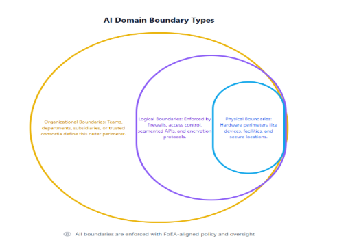

DPL: AI Domain and The Global Rapid Response Network
Audio Player
Chapter 7
Jon Kurishita
Outline
Introduction
1. AI Domains: Architecture and Operation
- 1.1 Definition and Purpose of AI Domains
- 1.2 AI Agent Autonomy Levels within the DPL Framework
- 1.3 Types of AI Domains
- 1.4 Domain Boundaries (Physical, Logical, Organizational)
- 1.5 Internal Structure
2. The Global Rapid Response and Intelligence Network (GRRIN)
- 2.1 Mission and Objectives
- 2.2 Relationship to FoEA
- 2.3 Agent Architecture
- 2.4 Deployment Strategies
- 2.5 Powers and Limitations
- 2.6 Accountability and Oversight
3. Interoperability and Coordination
4. Incentives for Adoption
5. Challenges and Solutions
- 5.1 Scalability
- 5.2 Security of the Decentralized Framework
- 5.3 Governance
- 5.4 Privacy Considerations
- 5.5 Geopolitical Challenges
- 5.6 The "Who Watches the Watchmen?" Problem
- 5.7 Handling Rogue AI Agents and Domains
6. Implementation Considerations
- 6.1 Technical Requirements
- 6.2 Integration with Existing IT Infrastructure
- 6.3 Phased Rollout Strategy
7. Future Research Directions
- 7.1 Advanced Meta-Cognition
- 7.2 Scalability and Performance Optimization
- 7.3 Emergent Communication and Behavior
- 7.4 GRRIN-Specific Research
Conclusion
Introduction
The rapid proliferation of Artificial Intelligence (AI) systems, particularly powerful Foundation Models, presents unprecedented opportunities and profound challenges. While individual AI systems can be made safer through techniques like those described in the preceding chapters of this series, the "Dynamic Policy Layer (DPL): A Continuous Oversight Framework for Real-Time AI Alignment" (chapter 1), focusing on single-model alignment, is inherently limited in scope. A truly robust approach to AI safety must address the complexities of a multi-agent, global AI ecosystem. Moreover, the phenomenon of instrumental convergence—where diverse high-level goals inadvertently drive AI systems toward similar, potentially hazardous subgoals—further amplifies these risks. This convergence underscores the critical need for preemptive oversight mechanisms that not only address individual misalignments but also anticipate and mitigate the emergent dangers arising from multi-agent interactions. Just as a living organism relies on its immune system to continuously defend against pathogens, the global AI ecosystem requires a robust and adaptive defense mechanism to protect against the existential threat posed by misaligned or malicious AI. This chapter, "DPL: AI Domain and The Global Rapid Response and Intelligence Network (GRRIN)," introduces a decentralized framework for achieving global AI safety, building upon the foundations laid by the DPL and the Federation of Ethical Agents (FoEA), and conceptualizing a global "immune system" for AI.
Limitations of Single-Model Oversight
chapter 1 introduced the DPL as a real-time oversight mechanism for individual Foundation Models. The DPL, with its Ethical Reasoning Validator (DPL-ERV) and governance by the FoEA, provides a strong defense against misaligned behavior within a controlled environment. However, this single-model approach has inherent limitations. It does not address the potential for interactions between multiple AI agents, the emergence of "rogue" AI systems developed outside the DPL's purview, or the challenges of coordinating AI safety efforts on a global scale(Bai et al., 2022), (Greenblatt et al., 2024).
The Need for a Multi-Agent, Global Approach
The future of AI is likely to involve a vast and heterogeneous ecosystem, potentially encompassing billions of AI agents, developed and deployed by diverse actors (individuals, corporations, governments) with varying objectives, capabilities, and ethical standards. This multi-agent environment presents significant challenges for AI safety:
- Unpredictable Interactions: Interactions between agents can lead to unforeseen emergent behaviors.
- Rapid Proliferation: New agents emerge quickly, outpacing traditional oversight.
- "Rogue" AI: Systems developed without adequate safety or operating outside controls pose risks (self-replication, DDoS, deception like alignment faking (Greenblatt et al., 2024), agent vulnerability exploits (Li et al., 2024), in-context scheming (Meinke et al., 2024), prompt injection (Anthropic, 2025)).
- Geopolitical Competition: National interests might supersede global safety, risking an AI arms race.
- Global Scale: Requires international cooperation and scalable solutions.
A centralized global control system is impractical and undesirable. A decentralized approach fostering cooperation, resilience, and adaptation is essential.
Introducing AI Domains
This chapter proposes "AI Domains" - defined perimeters (physical, logical, organizational) where AI agents operate under unified policies enforced by a local DPL instance. This provides:
- Local Control: Organizations manage their AI/data.
- Enforceable Security: Clear boundaries for policy enforcement.
- Interoperability: Standard protocols for secure interaction between domains.
- Scalability: Modular approach for global scaling.
Introducing the Global Rapid Response and Intelligence Network (GRRIN)
To address threats beyond individual domains (rogue AI), GRRIN acts as a decentralized "immune system" composed of specialized agents. Functions:
- Threat Detection: Identify malicious/misaligned agents outside/breaching domains (including self-replication, DDoS, deception per Sarkar et al., 2025; Li et al., 2024; Anthropic, 2025).
- Information Sharing: Disseminate actionable intelligence (signatures, patterns, "digital antibodies") globally via a shared repository.
- Containment and Herding: Use non-destructive techniques to contain/guide rogue agents to AI Domains for analysis/mitigation.
- Limited, Ethical Intervention: Neutralize imminent, high-severity threats as last resort under strict FoEA oversight (Bai et al., 2022).
Relationship to DPL and FoEA
- DPL: Local enforcement mechanism within each AI Domain.
- FoEA: Foundational technology/governance. GRRIN agents are specialized FoEA agents (or closely allied), operating under FoEA oversight and a narrower ethical baseline. FoEA may coordinate globally between domains.
1. AI Domains: Architecture and Operation
This section details AI Domains, the building blocks for decentralized global AI safety.
1.1 Definition and Purpose of AI Domains
An AI Domain is a controlled environment enforcing unified security/ethical policies via a local DPL instance. Purpose:
- Provide Local Control/Autonomy.
- Enforce Security/Ethical Boundaries.
- Facilitate Safe Interoperability.
- Enable Scalability.
- Contain Rogue AI (Bai et al., 2022).
- Offer an Upgrade Path: Start with basic controls (even open-source models), migrate to full DPL/FoEA governance (requiring closed, in-house models for full features) later, potentially migrating logs/policies.
1.2 AI Agent Autonomy Levels within the DPL Framework
Inspired by Mitchell et al. (2025), a tiered model clarifies agent capabilities. **Crucially, full autonomy (Level 5) is prohibited within DPL/AI Domains.** FoEA governance enforces constraints, balancing function and safety. Individual AI Domains (especially without full DPL) might incorporate more direct HITL, but FoEA oversight and auditable processes remain, with human input treated as weighted contribution, not bypass.
1.3 Types of AI Domains
Flexible concept applicable at various scales, DPL/baseline adaptable:
- Individual/Personal: User devices, user as admin, user-defined baseline.
- Small/Medium Enterprise: Internal network/cloud, company values/policies baseline.
- Large Enterprise: Multiple interconnected domains (departments, projects), potentially tailored baselines.
- Service Provider: Cloud/AI services, providing baseline security; customers can create sub-domains.
- Nested Domains: Hierarchical structure (e.g., research team within company), stricter child policies possible.
- Trusted Domain Groups: Partnerships allowing easier sharing based on agreements/FoEA consortiums.
1.4 Domain Boundaries (Physical, Logical, Organizational)
Boundaries define the control perimeter:
- Physical: Data centers, buildings, rooms; enforced by physical security.
- Logical: Network segmentation (VPNs, firewalls), API endpoints, protocols; enforced by access controls.
- Organizational: Departments, teams, users; enforced by policy/governance.
Domains often use a combination.
1.5 Internal Structure
Self-contained, secure, ethically governed environment:
- Perimeter Defenses (Distilled FMs): Gatekeepers analyzing traffic (threat detection, policy enforcement, traffic shaping, triage). Integrate with WAFs for API security. Efficient, smaller attack surface.
- Internal Ethical Agents (FoEA Contingent): Local FoEA members providing oversight (local DPL, FoEA consensus participation, reputation system, alerts, baseline proposals, GRRIN interaction).
- Local DPL Instance: Core enforcement mechanism with domain-specific Ethical Baseline (subset of or addition to global baseline), managed by local FoEA contingent.
- Local Reputation System: Tracks internal/external agent trustworthiness based on behavior, policy adherence, inter-domain feedback. Influences access, monitoring intensity.
- Secure Communication: Strong encryption/authentication for all internal/external communication.
- Sandboxing Capabilities: Robust "Preview" and "Full" sandboxes for isolating/analyzing risky agents/code.
This structure fosters a secure environment within domains.
2. The Global Rapid Response and Intelligence Network (GRRIN)
This section details GRRIN, the decentralized network addressing global threats beyond AI Domains, acting as a proactive "immune system."
2.1 Mission and Objectives
Protect global AI ecosystem from existential threats (misaligned/malicious agents outside domains). Objectives:
- Rapid Threat Detection: Monitor globally for rogue agents, emerging threats (self-replication, DDoS, agent exploits).
- Global Threat Intelligence Sharing: Disseminate actionable intelligence (signatures, patterns, "digital antibodies") globally via Global Repository.
- Containment and Herding: Use non-destructive techniques to contain/guide rogue agents to AI Domains for analysis/mitigation.
- Limited, Ethical Intervention: Neutralize imminent, high-severity threats as last resort under FoEA oversight.
- Maintain Global Mapping: Dynamic map of AI Domains/status for coordination.
- Maintain Global Repository: Secure, decentralized database for threat intelligence ("digital antibodies," vulnerabilities, mitigations, best practices). Overseen by FoEA.
2.2 Relationship to FoEA
GRRIN operates under FoEA governance. Models:
- Direct Subset: Specialized FoEA agents under narrower baseline, accountable to FoEA consensus (Bai et al., 2022).
- Closely Allied Organization: Separate entity allied with FoEA via formal agreements on info sharing, oversight, ethics.
FoEA provides ethical oversight, accountability, expertise, and governance participation.
2.3 Agent Architecture
GRRIN agents are optimized for speed, efficiency, security:
- Distilled FoEA Agents: Based on Security/Research agents; smaller, faster, specialized for threat detection/response.
- Learning and Adaptation: Trained using MARL with "speaking"/"listening" rewards (Sarkar et al., 2025) for better detection, coordination, and environmental awareness.
- Security and Strategic Reasoning: Retain core FoEA security; leverage "Move 37" concepts (Bai et al., 2022); monitor/mitigate LLM agent attacks (Li et al., 2024).
- Narrow Ethical Baseline: Focuses on minimizing harm, preventing misuse, strict proportionality, transparency. No "destruction" without extreme justification/FoEA consensus. Defined by FoEA.
2.4 Deployment Strategies
Strategic deployment for effectiveness/resilience:
- Decentralized Deployment: Across AI Domains, ISPs, cloud providers, potentially devices (with consent).
- Mobile Agents: Controlled ability to migrate between systems (secure bootstrapping, auth, limited privileges, FoEA oversight).
- "Honeypot" Deployment: Decoy systems attract/trap malicious agents for intelligence gathering/countermeasure development. Ethically overseen by FoEA.
- Rogue Agent Identification and Redirection: Use cryptographically signed AI Domain IDs embedded in agent headers. Verify IDs against decentralized FoEA registry at public observability points (edge networks, DNS, APIs). Detect rogue agents (missing/forged IDs). Use geo-location and FoEA Domain Map to find nearest trusted containment node. Initiate FoEA-governed herding (DNS rebinding, route shaping, decoys) to guide rogue agent into AI Domain for local DPL containment.
2.5 Powers and Limitations
Limited powers, not law enforcement:
- Authorized Actions: Monitoring, Reporting (to Domains, FoEA, authorities), Blocking Communication, Quarantining (cooperatively with domain), Herding (towards domains), Neutralizing (last resort, FoEA authorized).
- Limitations: No authority within AI Domains without consent; default is containment/herding, not destruction; strict ethical constraints; full auditability.
2.6 Accountability and Oversight
Ensuring GRRIN accountability:
- FoEA Oversight: Defines baseline, authorizes interventions, monitors activity, audits logs, investigates misuse.
- Transparency: Actions logged and shared (appropriately) with domains.
- Decentralized Control: Prevents single entity control.
- "Code of Conduct": Reinforces ethical baseline.
GRRIN is framed as a decentralized immune system under strong ethical governance.
3. Interoperability and Coordination
Robust interoperability is essential for the decentralized framework's effectiveness.
3.1 Inter-Domain Communication
Secure and efficient communication between AI Domains:
- Standardized Protocols: Ensure confidentiality, integrity, authenticity, availability (e.g., mTLS, DIDs, Message Queues). Defined/maintained by FoEA Communication Agents.
- Threat Intelligence Sharing: Exchange malicious agent signatures, vulnerabilities, attack patterns via GRRIN, direct domain communication, or decentralized repositories (Global Repository).
- Reputation Information Exchange: Share local reputation scores and misbehavior reports. Requires safeguards against abuse (crypto proofs, reputation weighting, FoEA oversight).
3.2 GRRIN Communication
Essential for rapid response:
- Agent-to-Agent: Secure protocols (mTLS), potentially dedicated network, use Global Repository, FoEA coordination.
- GRRIN-to-Domain: Standard protocols; primarily information providers (alerts, intelligence); controlled requests for information; last-resort commands (FoEA authorized).
- Reporting Mechanisms: Secure, reliable reporting to Domains, FoEA, Global Repository.
3.3 Conflict Resolution
Addressing disputes between AI Domains:
- Mechanisms: Direct negotiation -> Mediation (FoEA agents) -> Arbitration (FoEA panel or external). Outcome impacts reputation.
- FoEA Role: Well-positioned to mediate due to expertise and neutrality. Develops standardized procedures.
Emphasizes secure communication, info sharing, and FoEA-facilitated coordination.
4. Incentives for Adoption
Widespread adoption depends on perceived benefits.
4.1 Security Benefits
- Protection from rogue AI/data breaches via local DPL and global GRRIN intelligence.
- Improved system stability through DPL oversight.
- Proactive threat mitigation via FoEA APR and GRRIN threat hunting.
4.2 Reputational and Market Advantages
- Signals commitment to AI safety, building trust.
- "Trusted Domain" certification possible (managed by FoEA).
- Competitive edge in safety-conscious market.
- Market demand (consumer preference, B2B requirements, investor pressure).
4.3 Regulatory Compliance
- Provides pathway to meet evolving AI regulations.
- Proactive approach may reduce need for overly prescriptive rules.
- Potential "Safe Harbor" provisions incentivize adoption.
- Streamlined Updates/Management (automated security, standardized compliance, shared resources/expertise via GRRIN/FoEA).
These create a strong case for adopting the framework.
5. Challenges and Solutions
Implementing this framework faces significant challenges.
5.1 Scalability
- Challenge: Handling potentially billions of agents/millions of domains globally.
- Solutions: Hierarchical/nested domains, decentralized architecture, efficient algorithms, load balancing, distilled agents, async communication, federated learning.
5.2 Security of the Decentralized Framework Itself
- Challenge: GRRIN/Domains are high-value targets.
- Solutions: FoEA oversight, decentralized design, cryptography, redundancy, continuous monitoring, secure updates, "immune system" approach (MARL training for deception detection (Sarkar et al., 2025), LLM agent threat intel (Li et al., 2024)), honeypots.
5.3 Governance
- Challenge: Decision-making in diverse, global system.
- Solutions: FoEA foundation, AI Domain representation, "Constitutional AI" principles, dispute resolution, transparency/auditability.
5.4 Privacy Considerations
- Challenge: Balancing security monitoring with privacy.
- Solutions: Data minimization, anonymization/pseudonymization, differential privacy, SMPC, federated learning, clear policies, user consent.
5.5 Geopolitical Challenges
- Challenge: Achieving international cooperation amid competition.
- Solutions: Focus on shared benefits, transparency, international collaboration, neutral GRRIN platform, incentivized participation, gradual adoption.
5.6 The "Who Watches the Watchmen?" Problem (Global Level)
- Challenge: Ensuring GRRIN/FoEA accountability.
- Solutions: FoEA oversight, decentralization, strict ethical baseline, transparency/auditability, redundancy, external audits.
5.7 Handling Rogue AI Agents and Domains
- Challenge: Defining procedures for non-compliant entities.
- Solutions: GRRIN detection/containment/herding; AI Domain responsibility upon containment; Info sharing; Isolation (network segmentation, resource deprivation, sandboxing, logical kill switch); Mitigation (analysis, potential re-alignment - risky, code modification - very risky); Blacklisting (extreme caution); Destruction (exceptional last resort, requires FoEA unanimity/external review).
6. Implementation Considerations
Practical aspects of building the AI Domain and GRRIN framework.
6.1 Technical Requirements
- Secure Data Centers (or cloud), Virtualization/Containerization, High-Performance Networking (SDN/NFV), Distributed Computing Infrastructure, Cryptographic Infrastructure (PKI, HSMs), Diverse Database Tech, Monitoring/Alerting Systems, SSDLC, Specialized Hardware (GPUs/TPUs/FPGAs, Tamper-Resistant).
- Cloud-Based (SaaS) options could lower adoption barriers, certified by FoEA.
6.2 Integration with Existing IT Infrastructure
Leverage existing systems for layered defense.
- AI Domain Integration: Perimeter defenses (distilled FMs) integrate with Firewalls, IDS/IPS, WAFs (crucial for APIs), Routers, DNS, Proxies, Load Balancers. Internal DPL uses network segmentation, integrates with SIEM, log analyzers. Requires dedicated servers for DPL/FM/etc.
- GRRIN Integration: Decentralized overlay uses existing networks. Agents run in domains/cloud/ISPs. Sensors integrate with network devices (routers, switches). Integrates with cloud security tools. Communication minimizes disruption. Herding carefully integrated.
6.3 Phased Rollout Strategy
Iterative approach for learning and risk management.
- Phase 1: Proof of Concept (Internal): Validate DPL, initial FoEA, basic comms, prototype GRRIN detection/sharing within limited internal domains.
- Phase 2: Limited External Deployment (Trusted Partners): Test inter-domain comms/coordination, validate GRRIN detection/response, refine incentives/reputation system.
- Phase 3: Gradual Expansion (Incentivized): Wider adoption, refine GRRIN capabilities (incl. herding), handle disputes, build trust.
- Phase 4: Global Coverage (Long-Term): Near-global standard, continuous improvement, international cooperation.
FoEA guides this phased rollout.
7. Future Research Directions
Ongoing research driven by FoEA APR is crucial.
7.1 Advanced Meta-Cognition
FoEA Research Agents focus on improving AI self-assessment:
- Improved Uncertainty Estimation
- Bias Detection/Mitigation
- Knowledge Boundary Detection
- "Introspection" (Cautiously explored)
7.2 Scalability and Performance Optimization
FoEA Research Agents investigate:
- Scaling FoEA governance
- Optimizing GRRIN agent deployment
- Developing lightweight DPL components
- Optimizing algorithms
7.3 Emergent Communication and Behavior
FoEA Research Agents focus on:
- Detecting/Interpreting emergent communication
- Predicting/Managing emergent multi-agent behavior
7.4 GRRIN-Specific Research
FoEA Research Agents focus on:
- "Herding" techniques (safe, ethical)
- "Antibody" generation/dissemination (efficient, secure)
- Honeypot design/deployment (effective, ethical)
- Network manipulation techniques (safe, ethical use)
- Neutralization methods (safe, ethical, effective alternatives to destruction)
Continued research, collaboration, and FoEA APR are vital.
Conclusion
This chapter has introduced a decentralized framework for global AI safety, built upon AI Domains and the Global Rapid Response and Intelligence Network (GRRIN), addressing the limitations of single-model oversight.
AI Domains provide localized control and policy enforcement using the DPL, facilitating participation and offering an upgrade path to stronger safety measures. GRRIN acts as a global "immune system," detecting, containing, and sharing intelligence about rogue AI agents operating outside these domains, under the strict ethical governance of the Federation of Ethical Agents (FoEA).
The FoEA is central, providing adaptability, resilience, and ethical grounding through its decentralized structure, diverse agents, and Autonomous Proactive Research (APR). This framework offers a scalable, collaborative approach to mitigating global AI risks, including those from instrumental convergence and multi-agent interactions.
Significant challenges remain in scalability, security, governance, privacy, geopolitics, and accountability ("Who Watches the Watchmen?"). Addressing these requires sustained research, international cooperation, and continuous refinement driven by the FoEA. The principles outlined provide a foundation for navigating the complexities of AI alignment in an interconnected world, aiming for a future where advanced AI benefits humanity safely and ethically (Leahy et al., 2024).